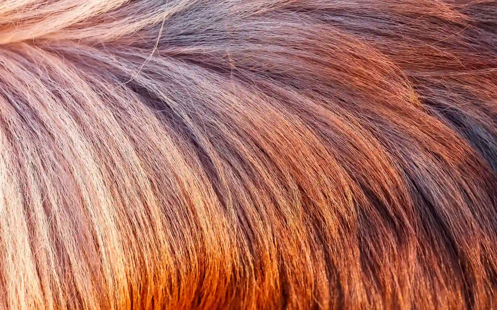
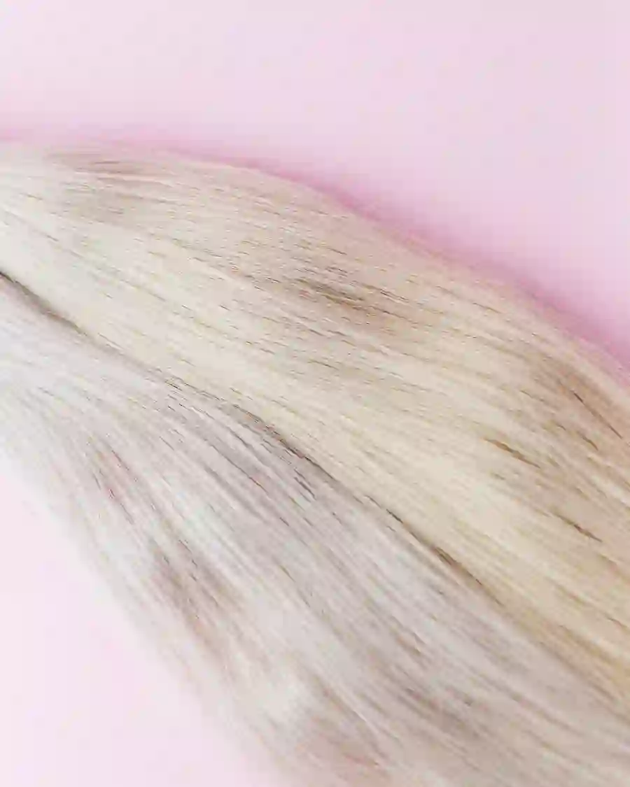
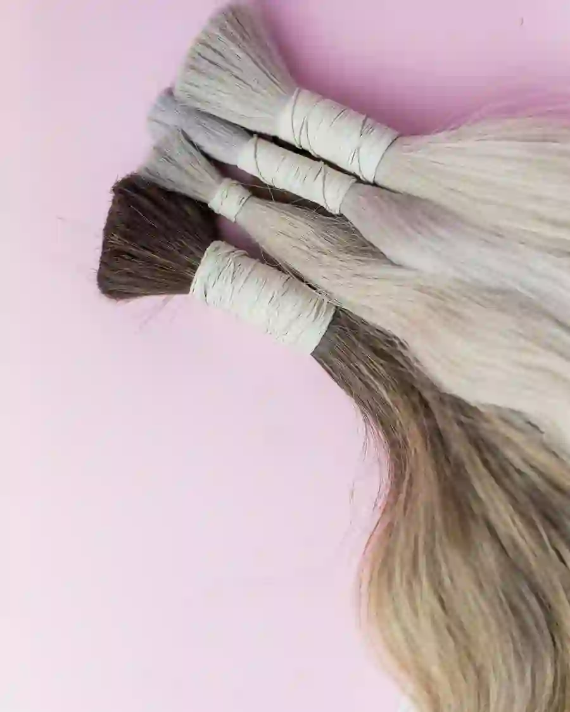
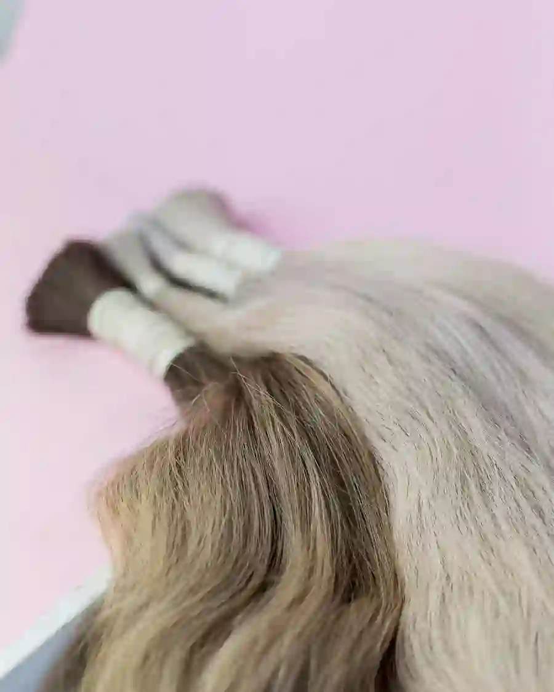
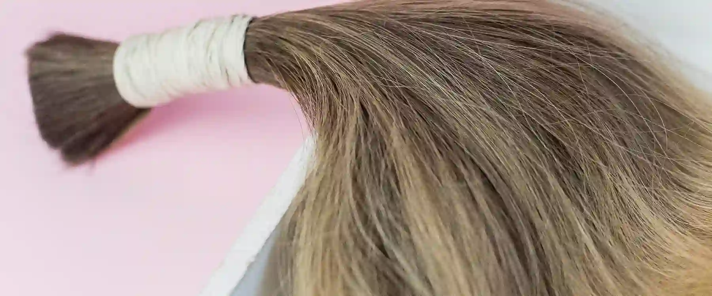

Balayage / Glow & Go
Individuelles Farbkonzept mit weichem, natürlichem Verlauf.
- kinnlang249 €
- schulterlang289 €
- Überlängeauf Anfrage
Balayage & Color Correction · Konstanzer Altstadt
Individuelle Farbkonzepte, Color Correction und persönliche 1:1-Betreuung in der Konstanzer Altstadt — statt Standardpaket von der Stange.
1:1-Betreuung · Individuelle Farbkonzepte · Salmannsweilergasse 30, Konstanz
Individuelle Beratung statt Standardpaket
Persönliche 1:1-Betreuung
Spezialisiert auf Color Correction
Mitten in der Konstanzer Altstadt
01 · Balayage
Jede Balayage wird frei Hand und abgestimmt auf Ausgangsfarbe, Haarstruktur und Hautunterton gearbeitet — kein Schema, keine parallele Massenabfertigung.
02 · Color Correction
Misslungene Vorfärbung, unruhiger Ansatz oder ein Farbwunsch, der bislang nicht aufgegangen ist? Color Correction ist eine der zentralen Spezialisierungen im Studio.
03 · Leistungen
Eine klare Preisorientierung — die finale Einschätzung erfolgt immer im persönlichen Beratungsgespräch.
Individuelles Farbkonzept mit weichem, natürlichem Verlauf.
Farbkorrektur bei komplexen oder unerwünschten Ausgangsergebnissen.
Definierte Curls für einen mühelosen Auftritt.
Farbkonzept auf veganer Rezepturbasis.
Glanzkur für Frische zwischen den Terminen.
Alle Angaben als Orientierung. Der finale Preis wird im persönlichen Beratungsgespräch bestätigt.
04 · Ergebnisse
Farbwelten aus dem Studio — eine erste visuelle Orientierung. Echte Kundenergebnisse folgen, sobald die Bildrechte final freigegeben sind.





05 · Über mich
Als Friseurmeisterin mit Spezialisierung auf Balayage und Color Correction arbeitet Frau Arslan bewusst im 1:1-Format — ohne parallele Terminabfertigung.
Im Mittelpunkt steht eine ehrliche Einschätzung deiner Haarqualität und ein Farbkonzept, das langfristig funktioniert statt kurzfristig zu beeindrucken. Genau diese Sorgfalt macht Color Correction zu einer der gefragtesten Spezialisierungen im Studio.
06 · Ablauf
Wir besprechen Ausgangssituation, Wunschfarbe und Haarzustand.
Ein Konzept, abgestimmt auf Hautunterton und Haarstruktur.
Volle Aufmerksamkeit — ohne parallele Termine im Stuhl nebenan.
Konkrete Empfehlungen, damit das Ergebnis lange trägt.
07 · FAQ
Balayage wird frei Hand aufgetragen, sodass ein weicher, natürlich wirkender Verlauf statt eines harten Ansatzes entsteht. Das Ergebnis wächst deutlich unauffälliger nach.
Der Verlauf ist so angelegt, dass er über mehrere Monate mitwächst. Ein Glossing zwischendurch hält Ton und Glanz frisch.
In den meisten Fällen ja. Der genaue Ablauf hängt vom Ausgangszustand ab und wird im persönlichen Beratungsgespräch eingeschätzt.
Die Dauer richtet sich nach Haarlänge und Konzept. Genaue Zeiten werden bei der Terminbestätigung mitgeteilt.
Bei den meisten Anfragen reicht ein kurzer Austausch vorab. Bei komplexen Ausgangslagen wird eine gesonderte Beratung empfohlen.
08 · Kontakt
Der einfachste Weg zu deinem Termin: kurze Nachricht per E-Mail mit Wunschleistung, Wunschtermin und ein bis zwei Fotos deiner aktuellen Haarfarbe.